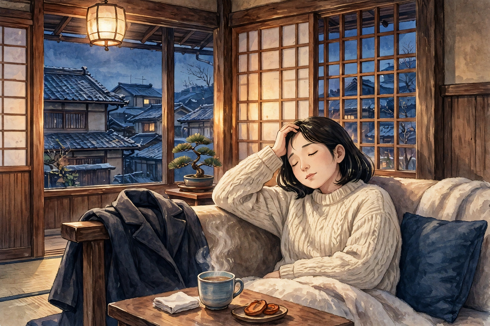

京都で忘年会続きに気になる疲労感｜要因の整理とセルフケア、受診の目安

職場の忘年会に、友人との集まり、取引先との会食——。12月に入ると、夜の予定が週に何度も重なる時期がやってきます。 会の翌朝、体が重くて起き上がりにくい、頭がぼんやりする、週の半ばにはもう疲れが残っている——。 忘年会が続く時期に、普段より疲労感が目立ってくる、という方は少なくありません。 この記事では、忘年会続きの時期に感じる疲労感について、一般的な解説と、帰宅の遅さや食事・お酒の重なり、睡眠時間の短縮、寒さなど考えられる要因の整理、会の前日・当日・翌日に取り入れられるセルフケア、受診の目安をまとめました。 なお、季節を問わず感じる全身の疲労感を取り上げた全身の疲労感の記事、夜の寝つきと疲労感を取り上げた寝つきと疲労感の記事とは場面を分け、ここでは「忘年会が続く時期と、疲労感」に焦点を当ててご紹介します。一週間の疲れが週末に表に出やすい方は、週末の疲労感の記事もあわせてご覧ください。
忘年会続きの時期に感じる「疲労感」とは
「疲労感」とは、体や頭に感じる重だるさ・眠気・集中しにくさなどをまとめて表す、一般的な表現です。 それ自体が病名というわけではなく、感じ方も人それぞれで、会の翌朝だけ気になる方もいれば、何度目かの会を過ぎたあたりから、休みの日まで残るように感じる方もいます。
忘年会の時期は、夜の予定が続くこと自体に加えて、仕事の締め切りや年始の準備など、昼間の予定も立て込む時期と重なります。 まずは「いつの会の後に・どのくらい続くか・眠りは足りているか・休む日が取れているか」を振り返ってみることが、ケアの出発点になります。 とくに、疲労感のほかに発熱などの症状をともなう場合や、休んでも長く続く場合は、セルフケアで様子を見る前に、後述の受診の目安もあわせてご確認ください。
忘年会続きの疲労感に考えられる要因
忘年会が続く時期に疲労感が気になるとき、その背景には一つの原因ではなく、夜の過ごし方や日中の予定の重なりがあることがあります。一般に、要因として次のようなものが挙げられます。いずれも断定ではなく、ご自身の過ごし方を振り返るための整理としてご覧ください。
- 帰宅・就寝時刻の遅れと睡眠時間の短縮：会が終わる時刻や帰宅の時刻が遅くなると、その分だけ眠る時間が短くなりやすく、それが何日も続くと積み重なります
- 食事の量と内容の偏り：コース料理や揚げ物、塩分の多い料理、締めの炭水化物など、普段より量も内容も重くなりがちで、食べる時刻も遅くなります
- お酒を飲む機会の重なり：乾杯から二次会まで飲む機会が続くと、眠りが浅くなったように感じたり、翌朝の重だるさにつながったりすることがあります
- にぎやかな場での気疲れ：大きな音や明るい照明、大人数での会話が続く場では、体を動かしていなくても気を遣う時間が長くなります
- 寒さと寒暖差：暖かい店内から冷え込む夜道へ出る行き帰りや、薄着での外出が続くと、体が冷気にさらされる時間が長くなります
- 仕事の繁忙期との重なり：年末の締め切りや大掃除、年始の準備が同じ時期に重なり、日中の疲れが残ったまま夜の会へ向かう日が続きます
- 移動と待ち時間の積み重ね：会場までの移動や、夜遅い電車での帰宅、駅での待ち時間も、少しずつ体力を使います
- 休む日の不足：週末にも予定が入り、会のない夜や何もしない日が取れないまま次の週を迎えると、疲れを置いてくる間がなくなります
東洋医学では、疲労感は「気」の巡りや「脾」「腎」の働きと関係づけて考えられ、体の巡り全体とも関わるとされます。 当サロンのお悩み別ガイドでも疲労感として、施術でのアプローチをご紹介していますので、あわせてご覧ください。
忘年会の前日・当日・翌日に取り入れられるセルフケア
忘年会が続く時期に、前日・当日・翌日の節目で取り入れやすい対処をまとめました。体調がすぐれないときは無理をせず、会への参加そのものを見直すことも含めて考えてみてください。
- 前日は睡眠を優先する：会の前日は予定を詰め込まず、早めに横になる時間を確保してみてください。当日の朝に疲れを持ち越さないことが、その日の負担を軽くします
- 当日の昼食は抜かず、軽めに：空腹のまま会に臨むと食べ過ぎ・飲み過ぎにつながりやすくなります。昼食は野菜や汁物のある、軽めの内容にしてみてください
- お酒と水を交互に：飲み物の合間に水やお茶をはさみ、自分のペースを決めておくと、量が重なりすぎるのを避けやすくなります
- 食べ方は温かいもの・野菜から：揚げ物ばかりに寄せず、温かい料理や野菜から箸をつけるなど、順番を少し意識してみてください
- 帰宅後は温まって、早めに横になる：熱すぎない温度の湯船にゆっくりつかるなど体を温め、画面を見る時間を控えて、眠るまでの流れを短くしてみてください
- 翌朝は起きる時刻を大きくずらさない：休みの日でも起床時刻が大きくずれると、夜の眠りに響くことがあります。白湯や温かい飲み物で体を起こし、室内を少し歩くなど軽く動いてみてください
- 会のない日を「休む日」にする：週に一度は夜の予定を入れない日をつくり、食事も軽めにして、休むことに使う日にしてみてください
- 強いマッサージや無理な運動は避ける：疲れが残っているときに強い刺激や激しい運動を重ねると、かえって負担になることがあります。痛みが出るようなケアは中止し、様子を見てください
12月の京都は、河原町や祇園の通りも年末のにぎわいを見せます。 会の予定が続く週は、買い物や用事を会のある日に重ねすぎないよう、週の予定全体を先に見渡しておくことも、負担を重ねないための工夫になります。
こんなときは医療機関へ
忘年会続きの時期の疲労感の多くはその時期の過ごし方と関係しますが、中には医療機関での確認が必要な場合もあります。次のような場合は、内科など医療機関への受診をご検討ください。お酒との付き合い方に不安がある場合も、ためらわずに相談してみてください。
- 会の時期が終わっても、疲労感が数週間以上続く、休んでも抜けない
- 発熱や体重の変化、むくみなど、ほかの症状をともなう
- 動悸や息苦しさ、胸の違和感がある
- 眠れない日が続く、気分の落ち込みが続く
- 日常生活や仕事に支障が出るほど強いだるさがある
- お酒の量が増えている、やめたいのにやめられないと感じる
当サロンは医療機関ではなく、施術はリラクゼーションと美容を目的としたものです。診断や治療は行いませんので、 気になる症状がある場合はまず医療機関へご相談ください。
サロンのご案内 — ステラアルタイル（京都）
ステラアルタイルは、京都市内の女性専用プライベートサロンです（阪急京都河原町駅・京阪祇園四条駅からご利用いただけます。詳しい住所は予約確定後にご案内します）。 オイルマッサージと美容整体を組み合わせ、背中・脚・腕・頭まわりまで全身の巡りをたどるように丁寧にケアし、全身の疲労感のケアも含みます。施術の前には、その日の体の状態についてカウンセリングを行い、力加減を調整しながら進めます。日々の体の使い方や休み方についてもお伝えします。 夕方からの営業ですので、会のない日のお仕事帰りにもご利用いただけます。
基本コースは90分10,000円（税込）の1コースです。月〜土17:00〜22:00（日曜休み）、完全予約制です。 現在は開院準備中で、予約の受付はまだ開始していません。